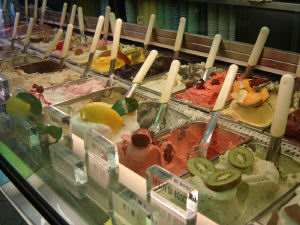
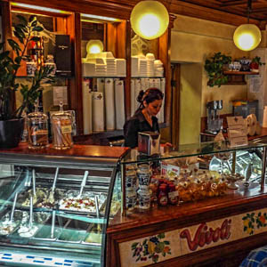

Santa Maria Novella Area: Sample Itinerary, Tues-Sun PM
- San Marco in the morning
- Santa Maria Novella Church & Cloisters
- Snack Nearby cafes and ice cream
- Santa Maria Novella Pharmacy
- Shopping near the Station
Detailed Site Information
| Site | Hours | Cost | Reservation | Notes |
|---|---|---|---|---|
| Santa Maria Novella Church & Cloisters | M-Th 9-5:30, F 11-5:30, Sa 9-5, Su 1-5 | €5 | No | Dress appropriate to religious site. Forbidden entry with bare shoulders or legs, hats or sunglasses. |
| Santa Maria Novella Pharmacy | Everyday 9-8pm | Free | No | Via della Scala, 16 |
Nearby Restaurants
- Trattoria al Trebbio, Via delle Belle Donne, 47-49R
- Osteria dei Centopoveri, Via Palazzuolo, 31r
- Buca Lapi, Via del Trebbio, 1r
- Banki Ramen, Via dei Banchi, 14R
- Ristorante Vincanto, Piazza di Santa Maria Novella, 29r
Nearby Cafes and Ice Cream
- Bar Pasticceria Piccioli, Borgo Ognissanti 118/R
- Venchi Cioccolato - Gelato, in station
- B. Ice, Borgo Ognissanti, 150
- Gelateria Lungarno, Lungarno Amerigo Vespucci, 26
- Bar Pasticceria Deanna, Piazza della Stazione, 54
- Shake Cafe (coffee), Via del Corso, 26
Florentine Gelato
Gelato is denser and silkier than American ice cream. It is made with more milk and less cream and rarely with eggs, the custard at the base of American ice cream. Gelato is also churned at a slower rate, which incorporates less air into the mixture. The artist and architect Bernardo Buontalenti is credited with inventing gelato in the late 1500s, at the behest of the Medici family for a feast for the King of Spain. Today there are numerous cafes around the city where you can enjoy this cool treat.
